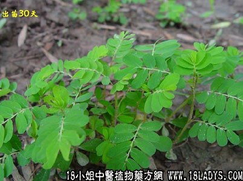

别名：日开夜闭。
植物名：叶下珠。
生长环境：本品为一年生，直立草本。生于田间、旷地上。
分布：广布于热带地区和我国长江以南至广东。
入药部分：全草。
采集期：夏、秋。
自采地点：荒郊、野地。
性味：性微凉、味淡。
功能：平肝、清热、明目。
主治、用量和用法：1、疳积：干用5钱至1两，蜜枣4枚，清水煎服；2、眼热：干用5钱至1两，猪瘦肉适量，清水煎服；3、疳积上眼：用法同上。
验方：（治小儿疳积方）珍珠草5钱、独脚柑2钱、金钱草3钱、清水二碗，煎成一碗，分三次服，或加蜜枣、猪肝等同煎。
（方解）小儿疳积，多由肝热郁结，脾胃消化不良而成。方中珍珠草、独脚柑、清肝去积；金钱草清热利尿，使肝郁之热从小便而出，构成清热去积利尿之剂。
（方歌）小儿疳积三件宝，珍珠独脚金钱草，猪肝蜜枣同入药，清补兼施法最好。
（治眼热方）珍珠草5钱、草决明5钱、犁头草5钱、旱莲草5钱、清水三碗，煎成一碗服。
（方解）眼热多因风热而成。方中珍珠草清肝明目；犁头草清热解毒；旱莲草、草决明清肝经风热；风热去而眼热自愈。
（方歌）珍珠旱莲犁头草，眼热用之如至宝，还有清肝草决明，风热消除眼自好。
参考资料：《中国药学大辞典》本品名真珠草，治小儿百病及诸疳弱瘦，眼欲盲皆有效，为末白汤下或蒸鱼肉食。
本文解释权归中药大全，本文地址：https://www.daquan.com/post/1602.html